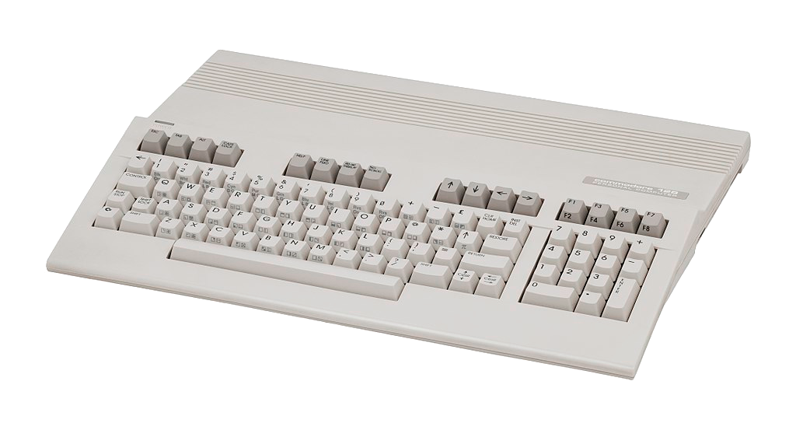
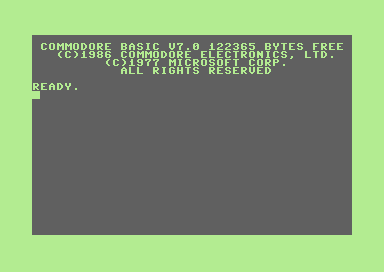

Le Commodore 128 est le dernier des ordinateurs personnels 8-bit, sorti en 1985. Il est le successeur du Commodore 64, le modèle d’ordinateur personnel le plus vendu au monde (22-30 millions d’unités vendus). Mais il n’arrivera pas à se démarquer avec l’apparition des ordinateurs 16-bit comme le Commodore Amiga ou l’IBM PC. De plus, la majorité des logiciels pour le Commodore 64 ne seront pas portés pour le 128 car ce dernier est rétro-compatible avec le 64, empêchant ces derniers de profiter des améliorations matériels du 128. Commodore arrête sa production en 1989, soit 5 ans avant le Commodore 64.
Le Commodore 128 vient par défaut avec Commodore BASIC version 7.0 ainsi que la version 2.0 pour la rétrocompatibilité avec le Commodore 64. Le Commodore 128 vient aussi livrer avec CP/M, l’ancêtre de MS-DOS, néanmoins ce dernier est extrêmement lent à cause du manque de puissance du Commodore 128. Berkley Softworks a aussi sorti, en 1987, GEOS pour le Commodore 128. GEOS est le seul OS pour Commodore 128 avec une interface graphique. Plusieurs logiciels sont développés pour ce dernier comme un logiciel de traitement de texte WYSIWYG ou un logiciel de peinture numérique.

Wikipedia : lien
retrobits : lien